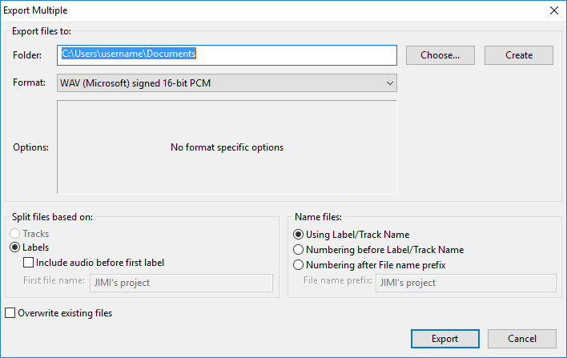
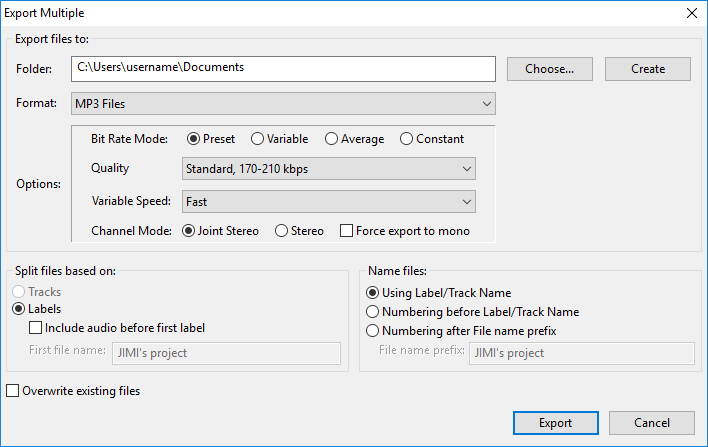
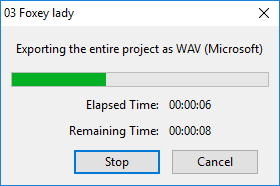
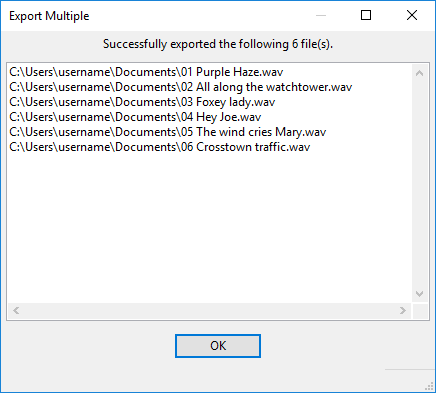
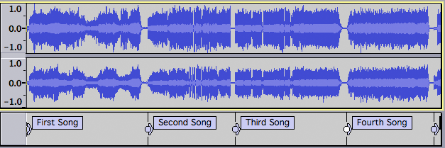
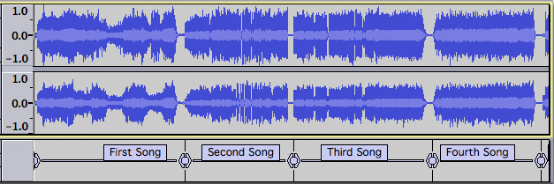
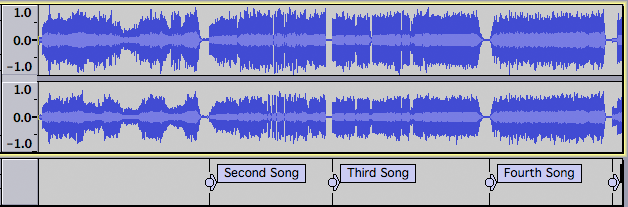
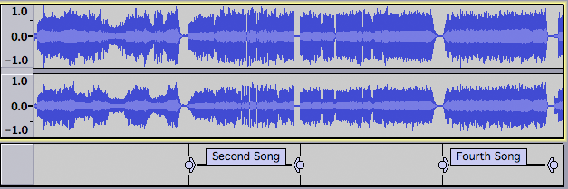
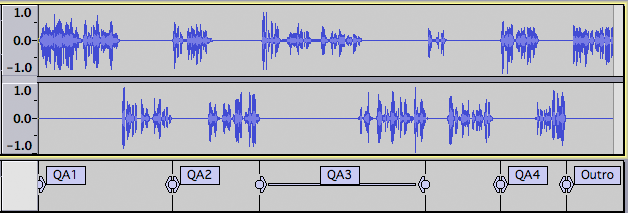

Export Multiple
For Export Multiple, selections in the waveform play no part in determining the audio that is exported.
See the Tutorial - Copying tapes, LPs or MiniDiscs to CD for an example of how this is used.
- 
Export Location and Format
- Folder: Shows the location to which the audio files will be exported.
- Choose: Clicking the button opens a standard File Export Dialog in which you select the location to which the files will be exported.
- Create: Type a file path in the "Folder:" box then click the button and that directory will be created. If a partial file path is specified that directory will be created in the same folder in which the Audacity application resides. For example, typing "myLP/myTracks" in the Export Location box and then clicking the button will create the folder "myLP" in the same directory as the Audacity application, and the folder "myTracks" inside the "myLP" folder.
| Use the Create function with caution and only if you know what you are doing - it is possible to create folders in non-standard locations for your operating system. Note that you will receive a "success" message even when you specify an existing file path or directory. |
- Format: Choose one of the available export formats from this menu. See Export Formats supported by Audacity for advice on which format to choose.
Options
Use the Options pane to choose the options for the export format you have selected. It enables you to make settings like quality or encoding for formats with options. As an example, here is the Export Multiple dialog with the MP3 format selected showing the options available for that format:
- 
Custom FFmpeg and (external program) export options
When you select Custom FFmpeg Export in the Format dropdown, the Options pane will contain the button. See Custom FFmpeg Export Options for more details.
When you choose (external program) in the dropdown, a text box will be provided to enter the export command.
| When exporting using Custom FFmpeg Export or (external program), Audacity will not add an extension to the file name. As workarounds:
|
Split files based on:
- Tracks: Export each audio track in your project to a separate file. File names are based on the track names. Any labels in the project are ignored.
- Labels: Choose this option if your project contains labels as well as one or more audio tracks.
Only labels in the uppermost label track are used for export. If more than one audio track is above the uppermost label track, the audio of all those tracks will be mixed into the exported files, unless you press the Mute button on some of the tracks to exclude them from the mix.
- The label track must contain at least one point or region label, thus:
- • Point labels mark the start of each section of audio you want to make into a separate file
- • Region labels span each section of audio you want to make into a separate file.
- • Point labels mark the start of each section of audio you want to make into a separate file
- Include audio before first label: Check this option only if you do not have a point label marking the start of the first file or do not have a region label spanning the first file.
- First file name: If you have checked "Include audio before first label", this option will be enabled. Type in the name you want to be used for the first exported audio file. If you have imported audio files, this text box contains the name of the first imported file, but you can still change the text.
Name files:
- Using Label/Track name: Each file will be named exactly as the text of each label if "Split files based on Labels" was selected, or exactly as the name of each track if "Split files based on Tracks" was selected. If any labels are empty (track names cannot be empty), Audacity will name each associated file as "untitled" and add a number as necessary to distinguish multiple "untitled" files.
- Numbering before Label/Track Name: Label or track names are used but a consecutive two-digit number and hyphen are prefixed to each file name. The numbering starts from "00-" if you chose "Include audio before first label", or from "01-" if you did not. This is a good choice if you are burning tracks to an Audio CD.
- Numbering after File Name Prefix: Label or track names are ignored. Instead, each file is named using a standard prefix specified in "File Name Prefix" below followed by a hyphen and a consecutive two-digit number. The numbering starts from "-00" if you chose "Include audio before first label", or from "-01" if you did not.
- File Name Prefix: Specifies a file name prefix to be used which will be followed by consecutive numbering. This name will default to the name of the project that you see in the Audacity title bar. If your first action in a project was to import audio files, this text box contains the name of the first imported file. You may change the text to whatever you like.
Overwrite existing files
This item is off (unchecked) by default; if unchecked, any files to be exported which have the same name as pre-existing files in the export location will be renamed with a hyphen and numerical suffix. The pre-existing files are left "as is". The first file which is exported with an identical name is renamed with suffix "-2" and subsequent files exported with that same name are renamed with suffix "-3", "-4" and so on.
When checked, any pre-existing files in the chosen export location which have the same name as the file to be exported will be replaced (without prompt) by the new file. However, there is an exception to this; if the Export Multiple process would create identically named files based on label text or track name these files will not be overwritten but given an ascending numerical suffixes.
Export and Cancel
Clicking the button will export the audio to the folder location, with the file name(s) and type you have selected.
Clicking the button will abort the export dialog without exporting any files. {{note|
- After pressing "Export", Metadata Editor (for embedded file information such as artist or genre) will appear for each file to be exported, unless you disable it for the export step in the Import / Export Preferences.
- If splitting files based on Tracks, any audio behind 0.0 on the Timeline (indicated by two left-pointing arrows at left of the waveform) is included in the export. With single exports, audio behind 0.0 is only exported if explicitly selected and then exported using the command.
Export progress dialog
Once you have clicked the button, or the final metadata button, Audacity will display a dialog enabling you to monitor the progress of the export:
- 
The green bar is a visual progress indicator. The Elapsed Time and Remaining Time are based on an estimate of the total time needed to export the file (the estimate may change as the export progresses).
Clicking the button immediately stops the current export, leaving the partly exported file in place. It then it moves on to start processing the next labeled section.
Clicking the button immediately stops the current export, leaving the part exported file then cancels the rest of the exports, returning to the Export Multiple dialog.
Export results
Once multiple exporting has completed, a status window is displayed showing the resulting files:
- 
Click the button to close this results dialog.
Examples of use of labels with Export Multiple
Case 1: A point label marking each song
- 
- In this case the first file will be named "First song" and will contain the audio between the "First song" label and the "Second song" label.
- Similarly the second file will be named "Second song" and will contain the audio between the "Second song" label and the "Third song" label, and so on for the rest of the labels.
- The last file will contain the audio from the last label to the end of the audio track and will be named according to the last label in the label track.
Case 2: A region label marking each song
- 
- In this case the first file will be named "First song" and will contain the audio spanned by the "First song" label.
- Similarly the second file will be named "Second song" and will contain the audio spanned by the "Second song" label, and so on for the rest of the labels.
- Any audio beyond the last region label will not be exported
Case 3: A point label marking each song except the first
- 
- This is a case where you would want to check "Include audio before first label" and supply a file name in the "First file name" text box.
- The first file will be named whatever is typed into the "First file name" text box and will contain the audio between the start of the track and the "Second song" label.
- Similarly the second file will be named "Second song" and will contain the audio between the "Second song" label and the "Third song" label, and so on for the rest of the labels.
- The last file will contain the audio from the last label to the end of the audio track.
Case 4: Region labels marking two chosen songs
- 
- In this case we want to export only two songs - perhaps songs by the same artist from a compilation album. Each song is marked with a region label.
- Only two files will be exported - "Second Song" and "Fourth Song" - corresponding to the audio spanned by those labels. No other audio will be exported.
Case 5: A mix of point and region labels
- 
In the case above we have an interview with a series of questions (upper track) and answers (lower track), and a concluding statement by the interviewer. We want to export the question-answer pairs and the interviewer's conclusion as separate files.
In most cases the question-answer pairs follow one after another, so point labels are a quick and convenient way to mark them. However after the third answer, the interviewer is told by the studio manager that time is running out, and the two parties discuss this. We want to omit this exchange.
- We mark the start of the first two question-answer pairs with point labels "QA1" and QA2".
- We mark the third pair with a region label "QA3" since we want to omit the discussion about running out of time.
- We mark the start of the fourth pair with point label "QA4" and the start of the interviewer's conclusion with point label "Outro".
So this is what will be exported:
- The first file will be named "QA1" and will include the audio between the "QA1" and "QA2" point labels.
- The second file will be named "QA2" and will include the audio between the "QA2" point label and the start of the "QA3" region label.
- The third file will be named "QA3" and will include the audio spanned by the "QA3" region label.
- The fourth file will be named "QA4" and will include the audio between the "QA4" and "QA5" point labels. Note that the audio between the end of the "QA3" region label and the "QA4" point label is not exported.
- The final file will be named "Outro" and will include the audio between the "Outro" label and the end. Had we decided to cut off the conclusion half way through, we would have selected what we wanted to keep and labeled that, producing a region label "Outro" instead. Then the audio beyond the "Outro" label would not have been exported.